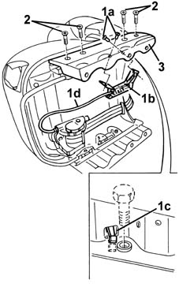
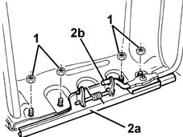
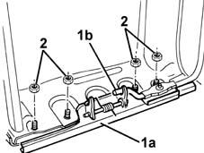
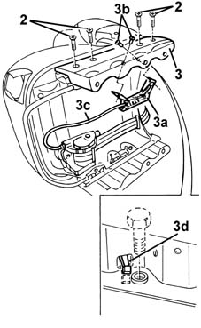

7045A75 central front seat support/guides - r r with seat removed
- Path
- Procedures > 70 FITTINGS > 7045 FRONT SEATS > 7045A front seat assembly > 7045A75 central front seat support/guides - r r with seat removed
- Kind
- repair procedure (removal / refitting; the operation number is the code)
- Applies to
- all engines; all production periods
- Interactive page
- https://sloeber94.github.io/elrnDB-fMltpl/en/#/2892231
Applies to: all engines; all production periods
 Removing
Removing
 Refitting
Refitting1. Only for the left mounting, remove the rivets (1a) using a drill.
Recover the mechanical sensor (1b) after disengaging its arming lever (1c).
2. Undo the bolts.
3. Remove the seat mounting.

Applies to: all engines; all production periods
1. Undo the nuts.
2. Disengage the guide (2a) from the seat slide lever (2b) and remove it.

Applies to: all engines; all production periods
Refitting
RemovingCheck that the support and guide are not damaged.
1. Refit the guide (1a) and engage it with the seat slide lever (1b).
2. Tighten the nuts.

Applies to: all engines; all production periods
1. Fit the seat mounting.
2. Tighten the bolts.
3. Only for the left mounting, fit the mechanical sensor (3a) and fix it with the rivets (3b).
Check that the arming lever (3d) is positioned correctly.
